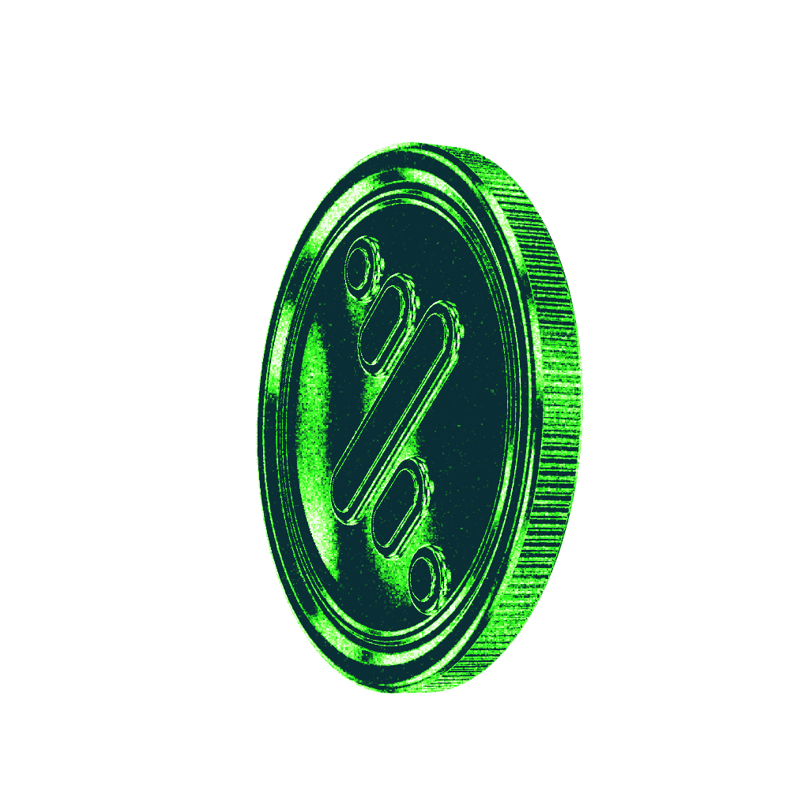

<!doctype html>
<html lang="es"><head><meta charset="utf-8"><meta name="viewport" content="width=device-width,initial-scale=1">
<title>bizum · ejemplo de uso</title>
<style>
  body{margin:0;min-height:100vh;display:grid;place-items:center;background:#0A2E35}
  .micro{position:relative;width:200px;aspect-ratio:1}
  .micro video,.micro img{position:absolute;inset:0;width:100%;height:100%}
  .micro .loop{visibility:hidden}
  .micro.en-bucle .loop{visibility:visible}
  .micro.en-bucle .entrada{visibility:hidden}
</style></head><body>
<!-- Entrada (una vez) + bucle (sin fin). Safari/iPhone usa .mov HEVC; el resto, .webm. Ambos con transparencia. -->
<div class="micro" id="bizum">
  <video class="entrada" muted playsinline preload="auto">
    <source src="bizum-entrada.mov" type='video/mp4; codecs="hvc1"'>
    <source src="bizum-entrada.webm" type="video/webm">
  </video>
  <video class="loop" muted playsinline loop preload="auto">
    <source src="bizum-loop.mov" type='video/mp4; codecs="hvc1"'>
    <source src="bizum-loop.webm" type="video/webm">
  </video>
</div>
<script>
  const el = document.getElementById('bizum');
  const [entrada, loop] = el.querySelectorAll('video');
  if (matchMedia('(prefers-reduced-motion: reduce)').matches) {
    el.innerHTML = '';            // movimiento reducido: imagen fija
  } else {
    entrada.addEventListener('ended', () => { loop.currentTime = 0; loop.play(); el.classList.add('en-bucle'); });
    entrada.play();
  }
</script>
</body></html>
